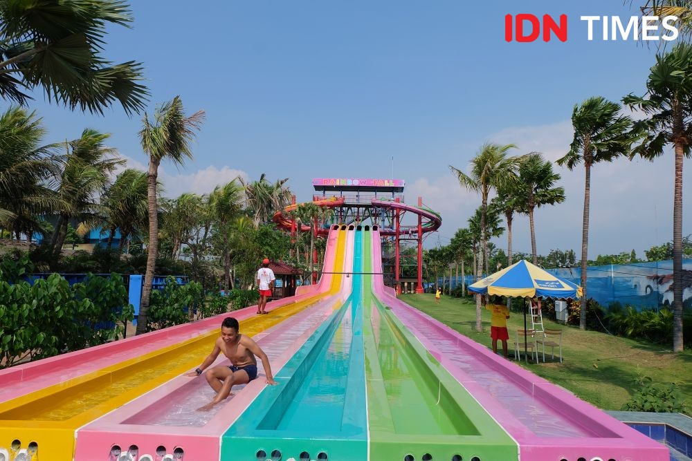
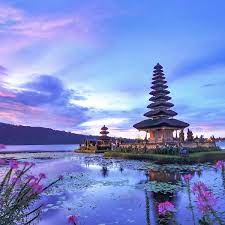
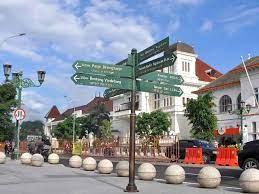
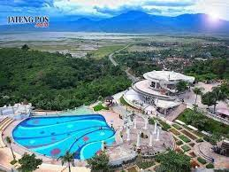
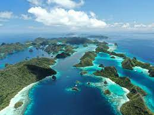
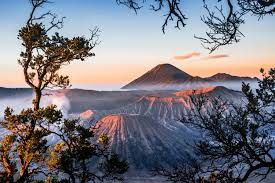

Hawai Waterpark
Hawai Waterpark merupakah salah satu waterpark terbaik di Indonesia, Hawai Waterpark memiliki berbagai macam wahana air dan wahana kering dengan sistem keamaan tinggi dan lifeguard bersertifikat Internasional. Beberapa wahana yang dikenal luas di masyarakat antara lain Kolam Ombak Tsunami dengan ombak tertinggi di Indonesia, Jet Coaster Water Slide dengan tower tertinggi di Indonesia, serta kolam arus dengan 8 tema yang berbeda.

Bali
Bali adalah sebuah wilayah provinsi yang terletak di Indonesia. Ibu kotanya adalah Denpasar. Provinsi Bali terletak di bagian barat Kepulauan Nusa Tenggara.

Malioboro
Bagi sebagian besar wisatawan baik lokal maupun mancanegara, Malioboro sudah tak asing sebagai tempat berwisata belanja paling diminati di Yogyakarta. Denyut aktivitas perdagangan sangat terasa di tempat ini..

Eling bening
Eling Bening merupakan tempat wisata kekinian yang terletak di Jalan Sarjono, Bawen, Kabupaten Semarang, Provinsi Jawa Tengah. Di kawasan ini merupakan tempat liburan yang cocok untuk keluarga yang bernuansa resort modern dengan sajian pemandangan alam.

Raja Ampat
Kepulauan Raja Ampat adalah gugusan kepulauan yang berlokasi di barat bagian Semenanjung Kepala Burung Pulau Papua. Secara administrasi, gugusan ini berada di bawah Kabupaten Raja Ampat dan Kota Sorong, Provinsi Papua Barat Daya.

bromo
Gunung Bromo terkenal sebagai objek wisata utama di Jawa Timur. Sebagai sebuah objek wisata, Bromo menjadi menarik karena statusnya sebagai gunung berapi yang masih aktif. Gunung Bromo termasuk dalam kawasan Taman Nasional Bromo Tengger Semeru..